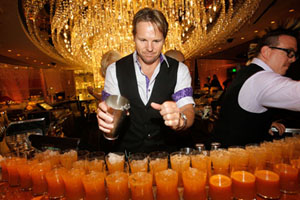

Mixology is another term for mixing drinks or bartending and a Mixologist is another term for a bartender or bar chef. Mixology is generally accepted as a slang term for a refined and in depth study of the art and craft of mixing.
Mixology has become a more common used term in recent years and is generally accepted to be a refined, higher study of mixing cocktails and drinks than the everyday actions of bartender. This definition and it's use is one of much debate in the bartending community, usually because of the impression it leaves that a mixologist is better and more skilled than a bartender. This isn't necessarily so. Neither is better than the other and each require a different set of skills, but then again the two titles can be interchanged.
 |
 |
 |